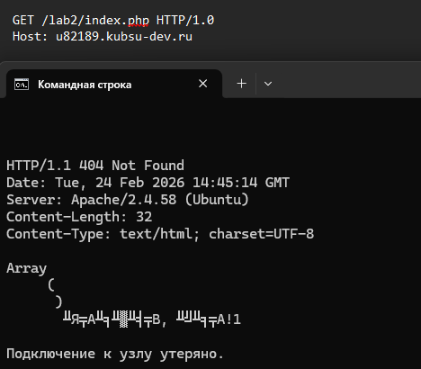
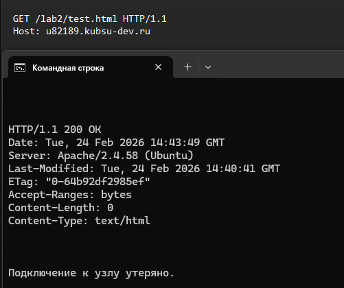
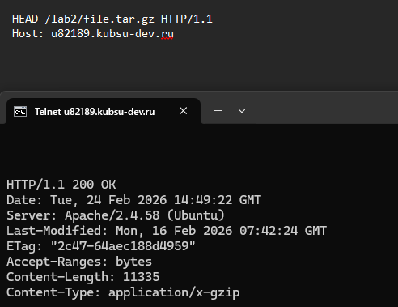
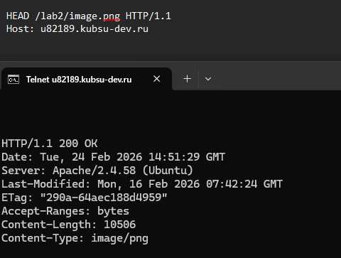
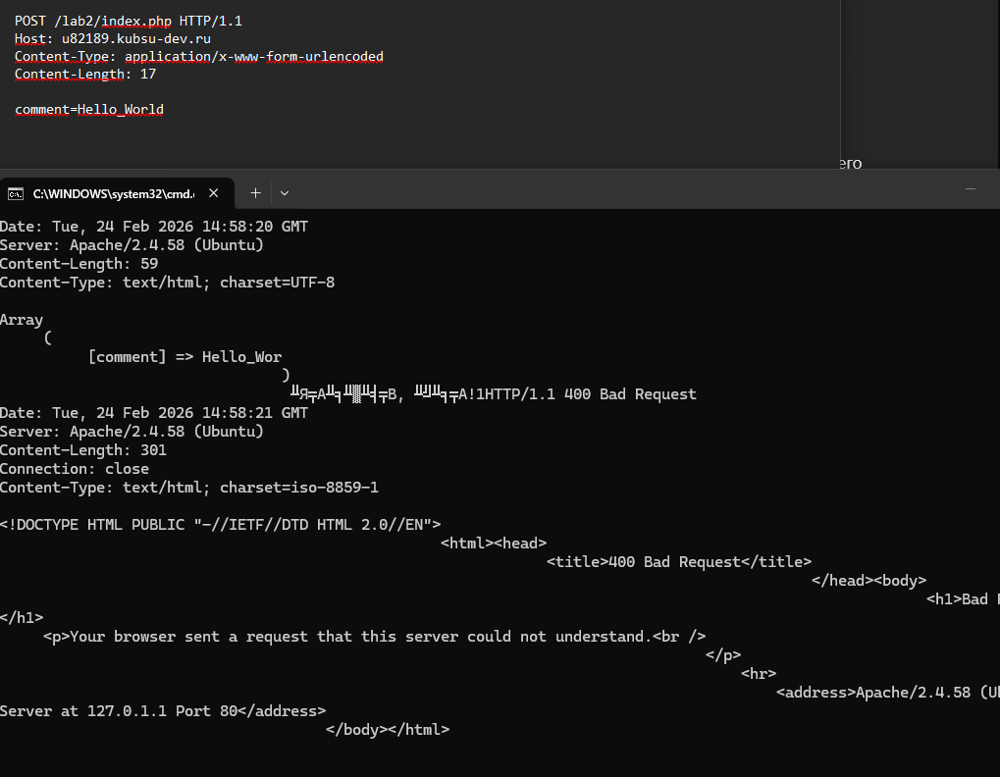
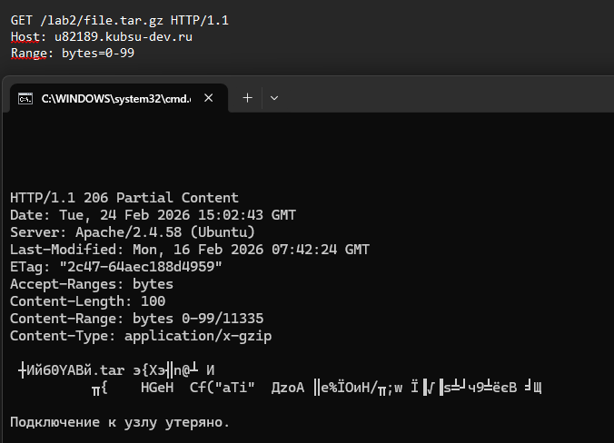
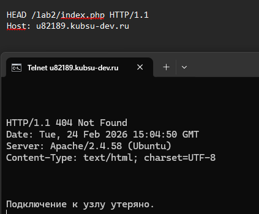

Задание 2
Капитонов Павел 21/2
1. Получить главную страницу методом GET в протоколе HTTP 1.0;

2. Получить внутреннюю страницу методом GET в протоколе HTTP 1.1;

3. Определить размер файла file.tar.gz, не скачивая его

4. Определить медиатип ресурса /image.png;

5. Отправить комментарий на сервер по адресу /index.php

6. Получить первые 100 байт файла /file.tar.gz

7. Определить кодировку ресурса /index.php
